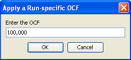

Although it is generally recommended to use an average OCF generated over multiple runs, it is sometimes useful to apply a run-specific OCF. This is accomplished by right clicking on a run, which produces a popup menu, and selecting "Apply Run-specific OCF":
This generates a dialog box into which a value can be entered:

This value is then presented in the run label to indicate that a run-specific OCF has been applied to the run:

To remove a run-specific OCF, repeat the process and enter zero as the OCF value.